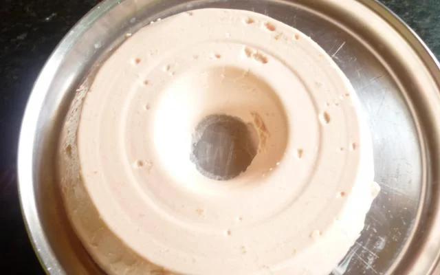

Inicio
Salgados
Doces
Dicas
Sobre nós
Salgados da vovó Mari

Ingredientes (20 porções)
2 sachês de gelatina sem sabor
1 lata de leite condensado
900 ml de iogurte sabor morango
1/2 xícara de água
1/2 bandeja de morangos
Calda morango
1/2 bandeja de morangos
1/2 xícara de açúcar